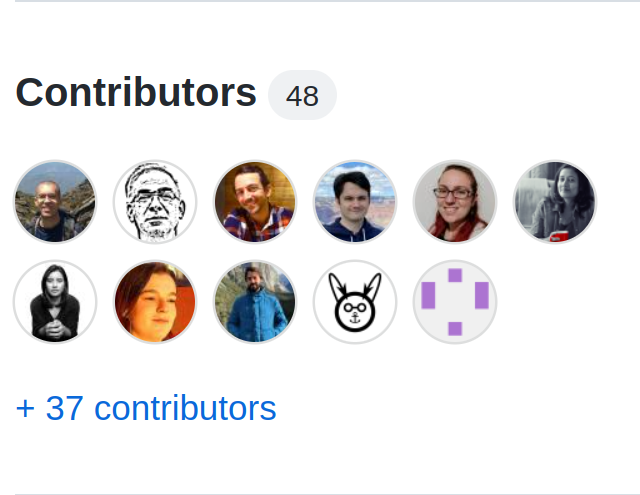
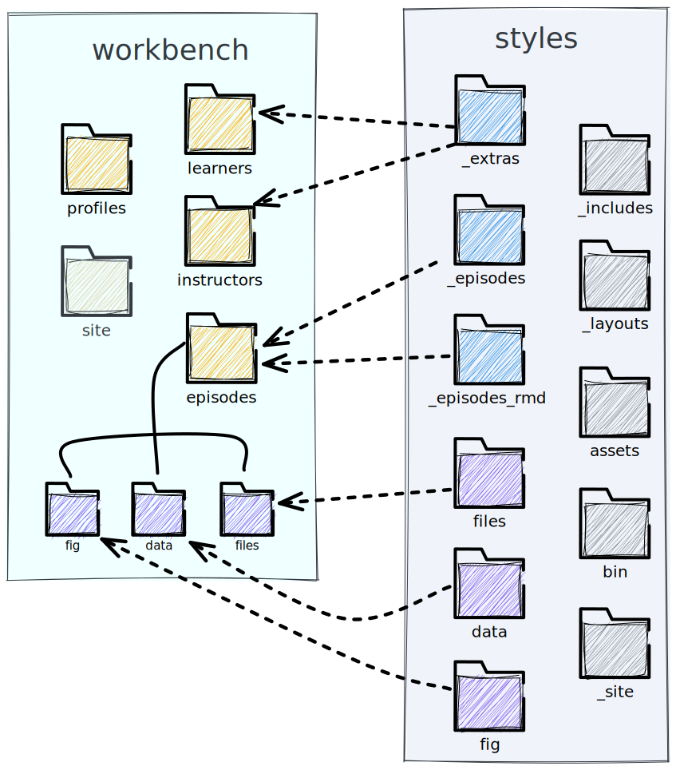

Transition Guide: From Styles to Workbench
Background
The Carpentries Workbench is a replacement for the former carpentries/styles lesson infrastructure. Lessons using The Carpentries Workbench have content separated from styling and build tools for a more seamless experience in updates to the lesson websites. In 2023, all lessons in official Carpentries lesson programs will use The Workbench and will be converted using the lesson-transition tool.
This document is intended to provide you with a quick reference about the differences between kramdown (used by styles) and pandoc-flavoured markdown (used by The Workbench):
Default Branch
Workbench
The default branch is always main
styles
The default branch is gh-pages UNLESS you have rendered RMarkdown content, then the default branch is main
Infrastructure
Workbench
The workbench infrastructure is independent1 from individual lessons. It consists of three major pieces of software.
- Git
- R
- Pandoc
The workbench itself consists of three R packages, which can all be updated on the fly with no changes to the lesson.
- {sandpaper}: user interface and workflow engine
- {pegboard}: parsing and validation engine
- {varnish}: HTML templates, CSS, and JS elements
styles
The styles infrastructure is embedded within the lesson itself. It requires the following major pieces of software to run:
The styles workflow is a Jekyll-based workflow, which uses the following components:
- bundler: manages the Ruby gems (packages) including Jekyll
- Jekyll: static site generator
- (file)
Makefile: workflow management for building and validating - (dir)
assets/: CSS and JS elements - (dir)
_layouts/: HTML templates - (dir)
bin/: intialisation, runtime, and validation scripts (in BASH, Python, and R) - (dir)
_includes/: Markdown and HTML boilerplate for customisation
The file components can only be updated via pull request.
Contributor Count
Because content and tools are separated in Workbench Lessons, giving credit for the lesson is much more straightforward. Here we use Dr. Sarah Gibson’s Cross-Stitch Carpentry lesson as an example
Workbench
The Contributors reflect those that actually worked on the lesson itself.

styles
The Contributors reflect those that worked on the lesson AND those that worked on the underlying infrastructure, going back to 2013.

Local Rendering
Workbench
- If you haven’t already, Follow the setup instructions for the workbench to install R, pandoc, and the workbench packages
- In your lesson directory, open either R, RStudio, or VS Code and run:
sandpaper::serve()styles
- If you haven’t already, Follow the setup instructions for styles to install Ruby, Bundler, Jekyll, Make, Python, and BASH
- In your lesson directory, open your command line and run:
make serveFolder Structure
The folders from styles to Workbench are rearranged to achieve the following goals:
- tools for building the lesson do not live in the lesson 4.
- the episodes can be directly lifted from the lesson without needing external context/resources.
- extra content intended for instructors is clearly separated from that intended for learners
Episodes (aka Chapters) will move from _episodes/ and _episodes_rmd to the single folder episodes/. _extras/ content will be split into learners/ and instructors/ depending on the context of the content. Figures, data, and files all become subfolders of episodes/. 
Setup Information
Workbench
The setup instructions are located on the home page at the #setup anchor.
The setup information lives in learners/setup.md or learner/setup.Rmd, depending on whether or not you need code generated. Access this file from episodes with
[setup instructions](../learners/setup.md)styles
The setup instructions are in a separate page called /setup
The setup information lives in the top level of the lesson at setup.md (no possibility to render generated content). Access this file from episodes with
[setup instructions]({{ page.root }}/setup.md)Callout Blocks/Special Blockquotes
Workbench
A callout block with The Workbench uses at least three colons followed by a keyword to start a block. The block is closed with at least three colons.
You can find a demonstration of all the possible callout blocks in the workbench component guide
:::: callout
### Act Openly
We believe that transparency, honesty, and fairness are keys to fostering
trust within an open community.
::::::::::::These are called fenced divs and in Workbench lessons, you will often see them have many more colons to clearly delineate sections in a lesson. The number of opening colons and the number of closing colons do not match and it is completely up to the lesson author to choose a style.
styles
A callout block (aka “Special Blockquote”) with styles used block quote syntax and level 2 headers followed by a postfix tag declaring the class of block
You can find a demonstration of all the possible callout blocks in the styles “Special Blockquotes” guide
> ## Act Openly
>
> We believe that transparency, honesty, and fairness are keys to fostering
> trust within an open community.
>
{: .callout}The decision to use blockquotes was to facilitate an easy way to author special sections without having lesson authors/contributors type <div> tags into the document.
Highlighted Code Blocks
Workbench
Code fences in the workbench are indicated by fences that consist of three backticks (```) with the name of the language appended on the opening fence:
clean all merged branches from git
```bash
git branch --merged | grep -v '^\*' | xargs git branch -d
```styles
Code fences in styles follow kramdown syntax, which prefers fences that consist of three tildes (~~~) with the liquid tag of the language appended on a new line after the closing fence (postfix tag):
clean all merged branches from git
~~~
git branch --merged | grep -v '^\*' | xargs git branch -d
~~~
{: .language-bash}Challenge/Solution blocks
Workbench
The challenge and solution blocks in the workbench are nested pairs of blocks with an optional Level 3 header. You can additonally add a “hint” block before the solution.
::::::::::::::::::::::::::::: challenge
### Challenge: build
What is the R command to build a Workbench lesson?
::::::: hint
This command is going to start a **serve**r on your computer
:::::::::::::
::::::::: solution
```r
sandpaper::serve()
```
::::::::::::::::::
:::::::::::::::::::::::::::::::::::::::To help distinguish sections, double the number of columns for the outer section compared to the inner section.
styles
The challenge and solution blocks in the workbench are nested block quotes with Level 2 headers. Additional blocks are still of the class “solution”
> ## Challenge: build
>
> What is the R command to build a Workbench lesson?
>
> > ## Hint
> >
> > This command is going to start a **serve**r on your computer
> >
> {: .solution}
>
> > ~~~
> > sandpaper::serve()
> > ~~~
> > {: .language-r}
> {: .solution}
{: .challenge}Questions/Objectives/Keypoints
Workbench
Questions and Objectives appear at the top of the lesson as fenced divs with list elements:
---
title: "Bomp"
teaching: 5
exercises: 5
---
::::::::::::::::: questions
- Who put the **bomp** in the bomp bah bomp bah bomp?
- Who put the **ram** in the rama lama ding dong?
:::::::::::::::::::::::::::
::::::::::::::::: objectives
- Solve the "bomp" mystery.
::::::::::::::::::::::::::::
## Introduction
...Keypoints should go in a fenced div at the end of the document:
...
::::::::::::::::: keypoints
- We will never know who put the bomp in the bomp bah bomp bah bomp.
:::::::::::::::::::::::::::styles
The questions, objectives, and keypoints were placed in the YAML metadata for each episode:
---
title: "Bomp"
teaching: 5
exercises: 5
questions:
- "Who put the bomp in the bomp bah bomp bah bomp?"
- "Who put the ram in the rama lama ding dong?"
objectives:
- "Solve the \"bomp\" mystery."
keypoints:
- "We will never know who put the bomp in the bomp bah bomp bah bomp."
---
## Introduction
...It was not possible to include markdown inside these strings and it often caused errors due to missed quotation marks (i.e. - "sentence with a period after quotes". was a common type of error.)
This content was originally introduced into the YAML metadata so that we could use Jekyll’s metadata parsing to create a custom introductory block.
Instructor notes
Workbench
An inline instructor note in the workbench is formed inside an episode by making a fenced div with the class “instructor”
:::: instructor
Here be dragons
::::::::::::Instructor notes for the whole lesson can be placed in instructors/instructor-notes.md
styles
Instructor notes do not exist in styles other than an aggregate markdown file called _extras/guide.md
Lists
Workbench
In general, if something does not work in Markdown, try adding a blank line. This is true for lists.
A list must start with a blank line to be rendered properly:
A list of things
- shoes
- coat
- glassesA list of things
- shoes
- coat
- glasses
A list of things
- shoes
- coat
- glassesA list of things - shoes - coat - glasses
styles
Jekyll is very forgiving for lists in general, so a blank line before the list is optional
A list of things
- shoes
- coat
- glassesA list of things
- shoes
- coat
- glasses
Internal Links
Workbench
Links in the Workbench are relative to the file so that you can link to the files and confirm they work in the github preview. Figures, files, and data are nested inside the episodes/ folder.
<!-- Next Episode -->
[next episode on dragons](dragons.md)
<!-- Data -->
[download the dragon data for this episode](data/dragon-lifespan.csv)
<!-- Setup -->
[setup instructions](../learners/setup.md)styles
Links are relative to the page that they are rendered to. You should use the {{ page.root }} variable and the link tag in order to construct the correct path to the resource:
<!-- Next Episode -->
[next episode on dragons]({{ page.root }}{% link _episodes/dragons.md %})
<!-- Data -->
[download the dragon data for this episode]({{ page.root }}/data/dragon-lifespan.csv)
<!-- Setup -->
[setup instructions]({{ page.root }}/setup.md)Figures
Workbench
Figures are written with the caption in the square brackets and alt appended as an attribute like so: {alt='image description'}.
{alt='a red baby
dragon head sticks out from its egg'}There is a valid reason behind this choice: text inside of the square brackets can be formatted as markdown, so it makes sense for the caption. Alt text needs no decoration as it will be descriptive.
styles
Figures are written with alt text in the square brackets, but no caption like so: 

The dragon emerges!one exception: github workflows are contained inside the
.github/workflowsfolder↩︎python in styles is required for validation and initialisation, but is not required for local rendering↩︎
R in styles is required for R Markdown-based lessons↩︎
caveat: we still need the GitHub actions, but those are buried in the
.githubfolder↩︎